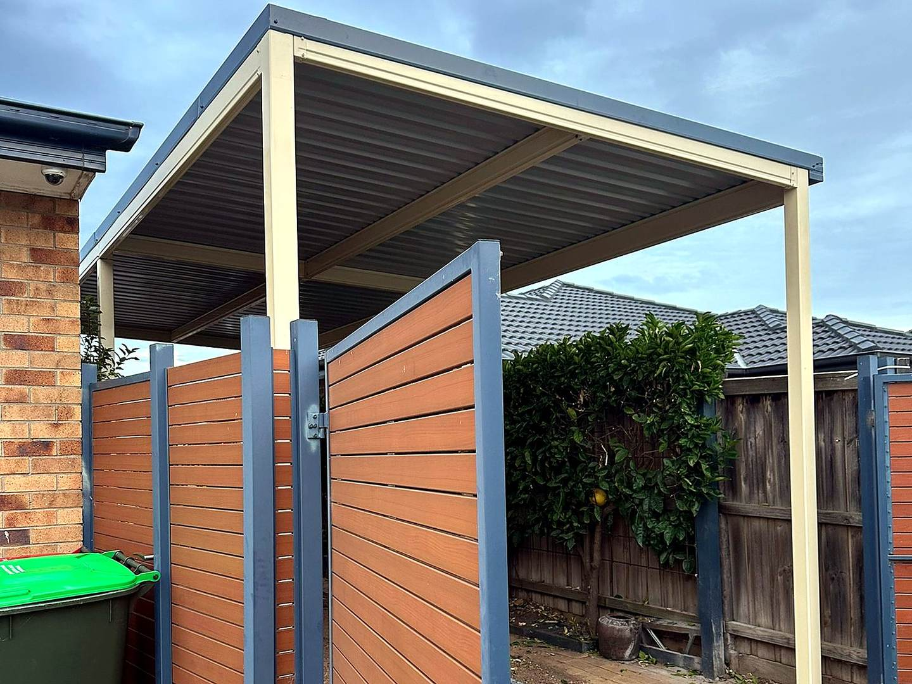

Project example
Side gate project in Werribee.
A timber-look slat gate with dark framing, built into a covered side-access area for a more finished and secure entry.
Request a gate automation quotation
Project scope
Frontage, access and automation details matter.
This Werribee side gate image has been cropped and brightened for the website so the panel finish, dark frame and covered side access are easier to see. It gives customers a practical reference for matching gates to fencing and outdoor structures.
LocationWerribee, Melbourne west.
Project typeSide gate with timber-look slat panels.
FinishWarm slat infill with charcoal framing.